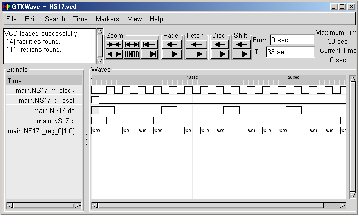

State Transition
We can describe state and state transitions in a stage with NSL. At power on reset, state will start with 'first_state'. The state will not changed whenever the stage is terminated and/or invoked.
Example-NS17
We will make a simulation on this circuitry as following command:
# ./exe NS17
The result will be available on your console.
The state is hold in a state register and the value associated with the stage name is defined by compiler automatically.
Now see the wave form of the simulation.
# ./exe -wave NS17
